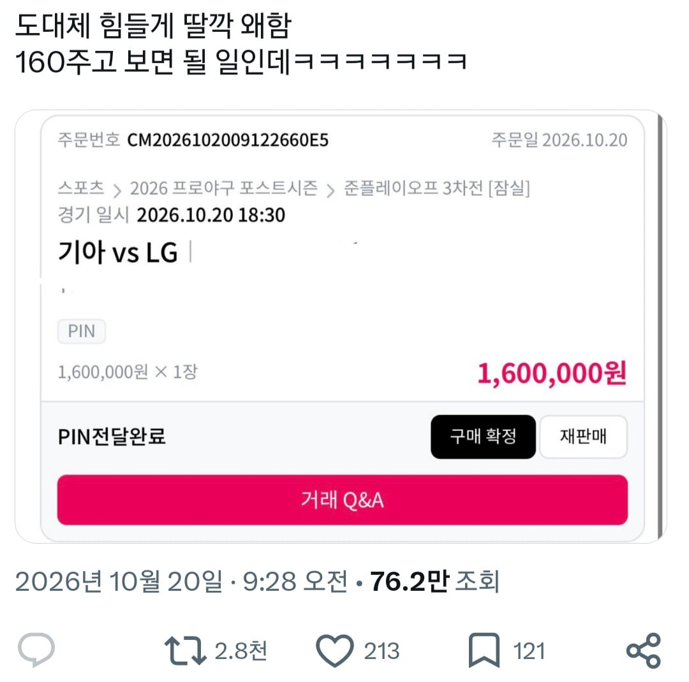
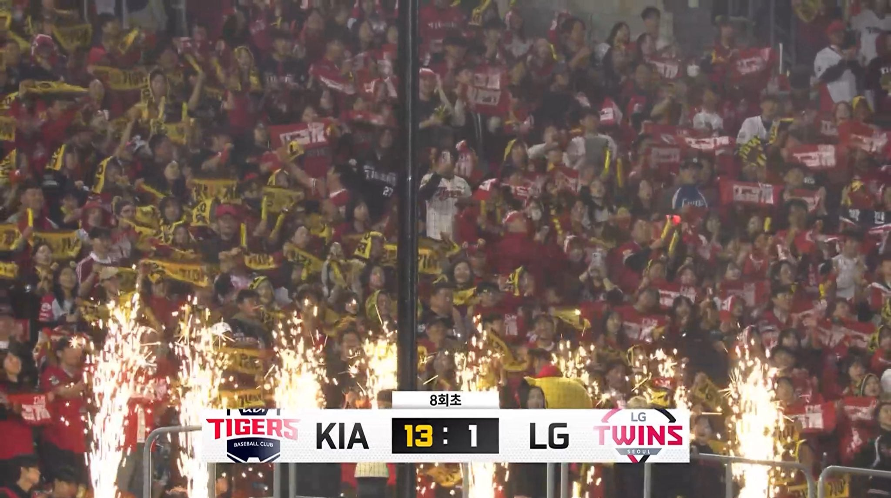
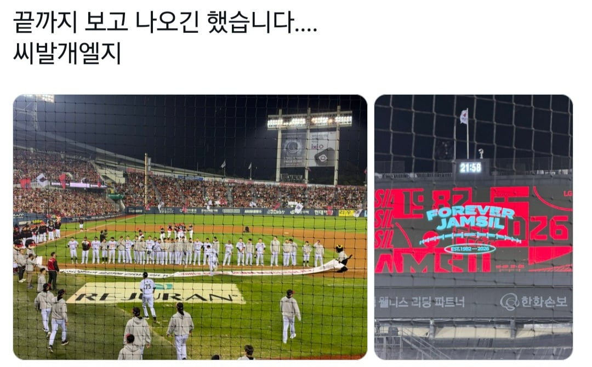

기아 vs 엘지 준플레이오프 3차전 암표를 160주고 산 엘지팬
하지만 결과는...

김도영의 그랜드슬램과 2회 초에 엘지 선발이 사라지는 호러쇼를 선보이며
잔인하게 쳐맞고 3:0으로 대떡난 잠실 마지막 경기로 끝나버림

그와중에 끝까지 보고 옴ㅋㅋㅋㅋㅋ

기아 vs 엘지 준플레이오프 3차전 암표를 160주고 산 엘지팬
하지만 결과는...

김도영의 그랜드슬램과 2회 초에 엘지 선발이 사라지는 호러쇼를 선보이며
잔인하게 쳐맞고 3:0으로 대떡난 잠실 마지막 경기로 끝나버림

그와중에 끝까지 보고 옴ㅋㅋㅋㅋㅋ
암표 사는놈들은 팬아님
그냥 도파민에 미쳐서 현실파악 못하는 놈임
리그에 도움 안되는 암덩어리임
혼자 무슨 재미로 봄
야구 좆도 몰라서 그러는데
전술같은게 있음?
예를들면 축구는 3백 4백 제로톱 투톱 등등 존나 다양한데
야구는 뭐가 있음? 걍 시발 가만히 서서 던지고 치고 달리는거 말고 머가있음?
감독은 왜있어 시발
축구가 실시간 전략 시뮬레이터라면 야구는 턴제에 조금 가까움
이미 결정된 타선에서 1루에 주자 나가있으니 희생번트 대자, 이 타자는 안타를 잘치니 크게 휘두르라고 지시하자 이런 느낌이지 중요한 상황이면 대주자나 대타같은 일시 교체카드도 고려해볼만 하고
축구랑 다르게 고정된 자리에서 크게 벗어날 수 없으니 전략이 약해지긴 하지. 야구는 3루수를 포수 뒤로 보낼 순 없는데 축구는 이론상 10백 가능하지 않아?
이게 가장 비슷한듯 축구는 실시간 전략시뮬레이션인데 미리 상황별 전술 지정해서 시뮬레이션 지켜보는거고 야구는 한턴한턴 캐릭터 위치조정하고 커맨드 입력해놓고 담턴 넘어가기
감독 그거 걍 토템임
아 아예 모른다길래 한 설명이고 팬들 입장에선 토템 맞긴 함 전술 구사했더니 안하느니만 못한 병살 나오면 병신 되는거고 그냥 선수 잘뽑아서 체급빨로 밀어붙이는게 제일 좋거든
사실상 야구는 턴제 게임이라 경기영향력이 적은건 사실인데 타자 스윙분석해서 타자별로 공이 자주 가는쪽으로 수비 쉬프트를 한다던지 1점이 중요할때 스퀴즈를 건다던지 투수 타자별 상성 봐서 대타내고 투수바꾸고 그런게 전략인거지 뭐
감독 성향에 따라 전술이 스몰볼, 빅볼이 나뉨
거기서 감독 성향에 따라 투수교체와 대주자 대타가 나오고
히트앤런이나 스퀴즈번트
수비시프트 위치 좌우 앞뒤로 땡김
축구 보단 감독의 영향이 적어도 무시할 정도는 아님
타격할때 좌타우타 따지고 투수 구종들 따지고 투수 투구 방법 체크하고 번트 스퀴즈 페이크 번트 앤 슬래쉬 런앤히트 히트앤런 수비시프트 적절한 대타 대주자 선택 고의사구 등등 존나 많은데
야구 감독은 매니저임 선수들 컨디션 모니터링이 주목적이고 전략은 솔직히 하는거 거의 없음 1,2점차에선 중요한데 타자들 컨디션이 좋은 날엔 감독이 할수있는게 없음
좀만 알아보고 까시지.
가끔 설계 지대로 들어가면 그냥 경기그냥 팀멘탈 터트릴 전략도 나오는데
암표를 저렇게 사이트에서 삼?
엘지 : 잠실 막댓 사수완료
5회에 나오는 팬도 있었다더라...
그냥 중계로 보면되지 왜 저돈주고..